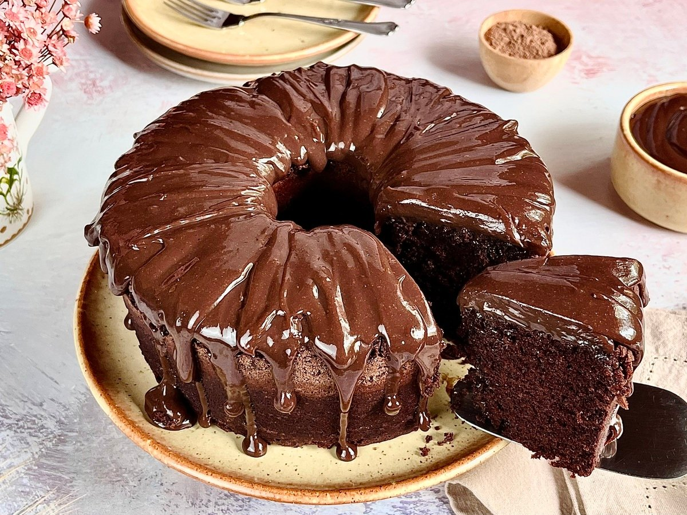

Bolo de Chocolate Clássico + Picareta + Tenis + Vandal Kuronami
Uma receita simples e deliciosa para revisarmos as principais tags HTML.


Ingredientes
- 3 ovos
- 2 xícaras de açúcar
- 3 xícaras de farinha de trigo
- 1 xícara de chocolate em pó
- 1 xícara de óleo
- 1 colher de sopa de fermento
- 1 xícara de água quente
- 3 diamantes
- 2 pentes de bala
Modo de Preparo
- Em uma tigela, bata os ovos com o açúcar até obter um creme claro.
- Adicione o óleo e o chocolate em pó, misturando bem.
- Acrescente a farinha de trigo aos poucos, intercalando com a água quente.
- Por último, adicione o fermento e misture delicadamente.
- Despeje a massa em uma forma untada e leve ao forno pré-aquecido a 180°C por 40 minutos.
Informações Nutricionais
Valores médios por porção (60g):
| Nutriente |
Quantidade |
% VD* |
| Valor Energético |
180 kcal |
9% |
| Carboidratos |
25g |
8% |
| Proteínas |
3g |
4% |
| Gorduras Totais |
8g |
15% |
| * % Valores Diários com base em uma dieta de 2.000 kcal. |
Glossário do Chef
Termos Técnicos
- Untar
- Passar manteiga e farinha em uma forma para evitar que a massa grude.
- Banho-maria
- Processo de cozimento lento em que o recipiente com o alimento é colocado dentro de outro com água quente.
- Ponto de Neve
- Consistência das claras de ovos após serem batidas vigorosamente até ficarem firmes e brancas.
Dicas Adicionais
Para um bolo mais fofinho, peneire a farinha e o chocolate antes de misturar.
Variações da Receita
Você pode substituir a água quente por leite quente para um sabor mais suave.
Aviso
Sempre peça ajuda a um adulto ao manusear o forno.